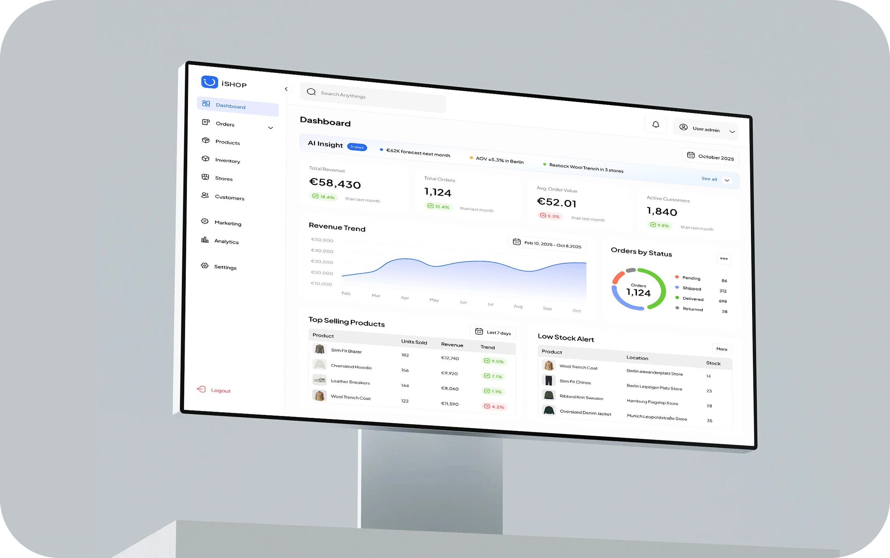
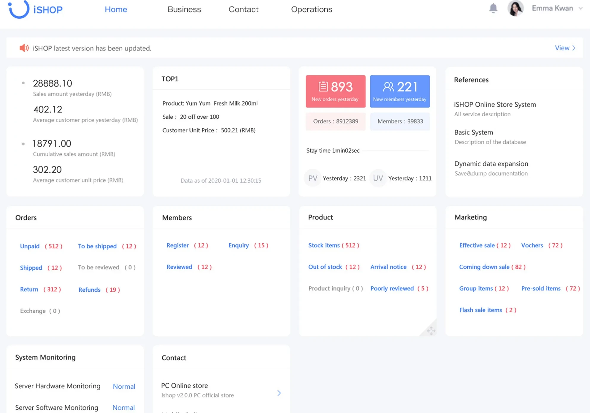
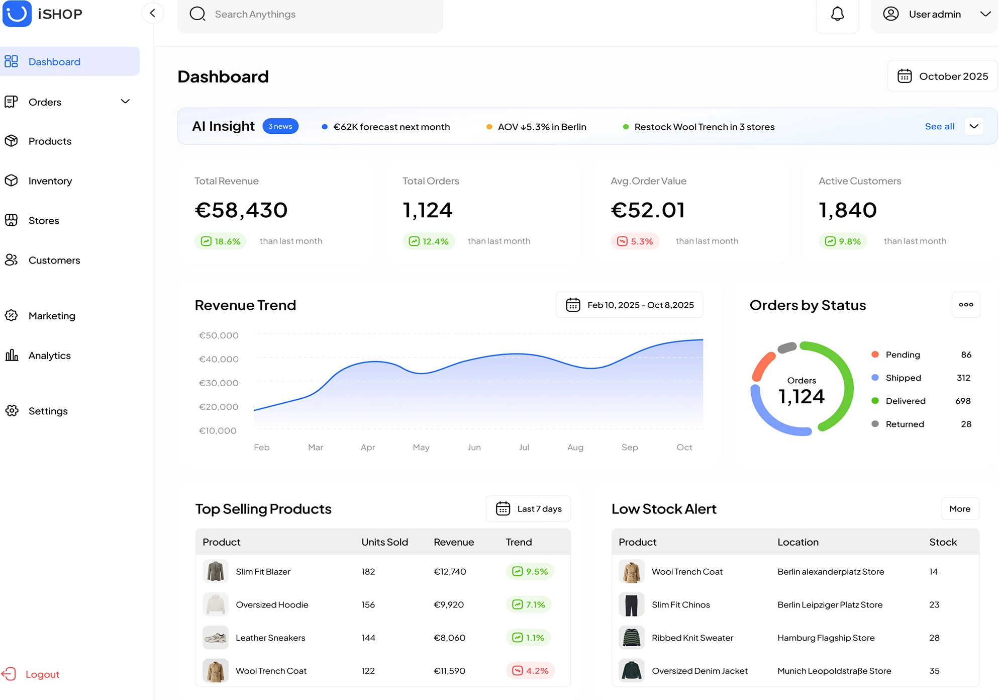
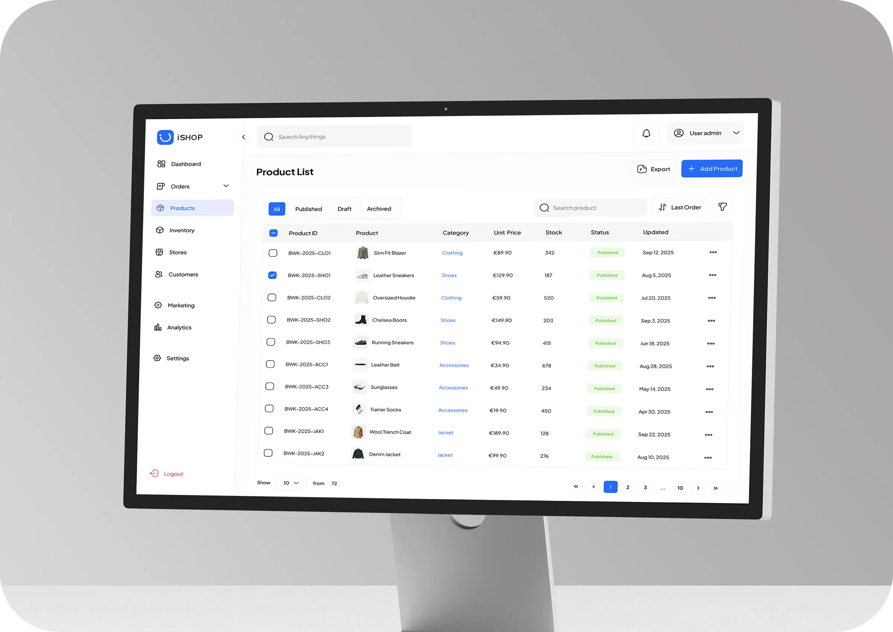
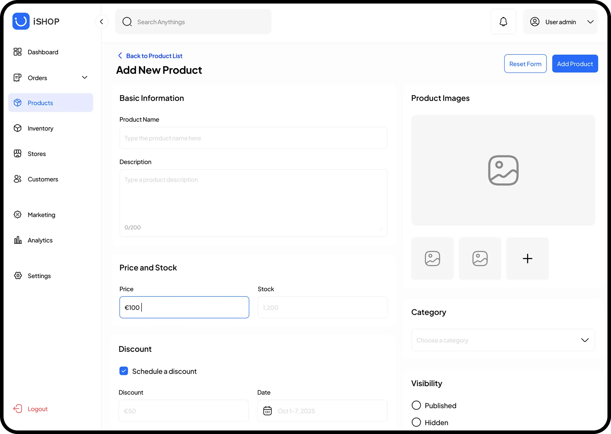
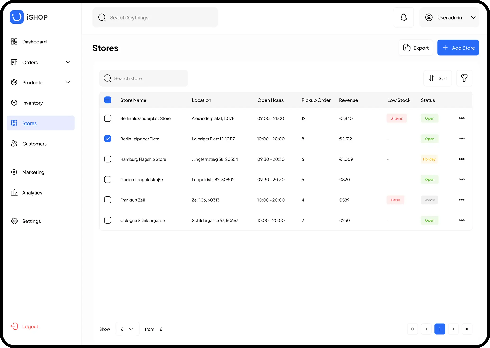
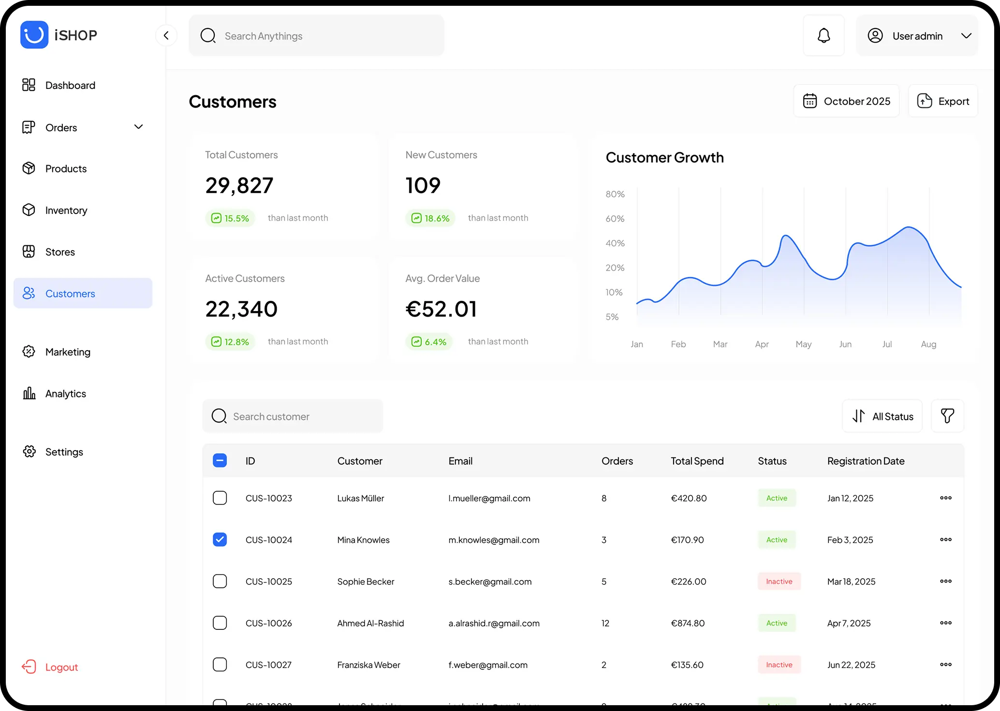

Redesigned a fragmented retail back-office into a unified operations platform—integrating orders, inventory, customers, and stores into one interface, reducing context switching and enabling data-driven decisions.



← Drag to compare →



